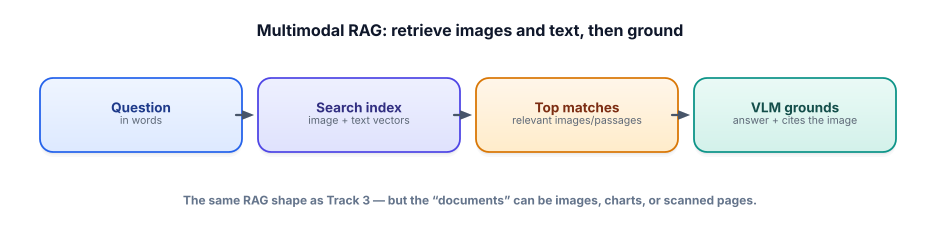

Multimodal RAG
RAG gave a model your documents. Multimodal RAG gives it your images too — product photos, charts, diagrams, scanned pages — so it can retrieve and reason over visual knowledge, not just text. It’s Track 3 with a wider definition of “document.”
Why retrieve over images
Plenty of the knowledge you’d want a system to ground on isn’t text: a product catalog is photos, a technical manual is full of diagrams, financial reports are charts, an archive is scanned pages. Text-only RAG can’t reach any of it. Multimodal RAG extends the same retrieve-then-ground pattern so the “documents” can be images: given a question, find the most relevant images (and text), and feed them to a VLM to produce a grounded, cited answer. The shape is identical to Track 3 — index, retrieve top-k, ground — only the content type widened.

Two ways to make images searchable
The only genuinely new question is: how do you retrieve images by a text query? Two approaches, both free.
1 · Shared-space embeddings (CLIP). A model like CLIP embeds images and text into the same vector space, so a text query and a matching image land near each other. You embed all your images once, then embed the query text and do the same cosine-similarity search as always — the image whose vector is closest wins. This is true image search: “a red running shoe” finds the photo even if no caption says those words.
from sentence_transformers import SentenceTransformer, util
model = SentenceTransformer("clip-ViT-B-32") # open CLIP, free
img_vecs = model.encode([Image.open(p) for p in image_paths]) # index images
q_vec = model.encode("a red running shoe") # same space!
hits = util.cos_sim(q_vec, img_vecs)[0].topk(3) # nearest images2 · Caption-then-embed. Use a VLM to describe each image in text (“a red running shoe on a white background, side view”), then embed and index those captions with your normal text pipeline. Now image retrieval is just text retrieval over the captions. It’s simpler to bolt onto an existing text-RAG system and lets you search on details a caption spells out, at the cost of an up-front captioning pass and whatever the caption leaves out.
Then ground with a VLM
Retrieval finds the relevant images; the generation step hands those images (not just captions) to a VLM along with the question, so it can actually look at them to answer — “based on the retrieved photo, this shoe has a mesh upper and a visible air unit.” That’s grounding (Track 3, Track 7) in multimodal form: the answer is anchored to retrieved visual evidence, and you can “cite” by showing the image it used. Same trust discipline, richer sources.
- Multimodal RAG widens “documents” to images (photos, charts, diagrams, scans) — same retrieve-then-ground shape as Track 3.
- Make images searchable two ways: shared-space embeddings (CLIP) for true image search, or caption-then-embed for a simpler bolt-on.
- CLIP puts images and text in one vector space, so a text query finds matching images by cosine similarity — the search you already know.
- Ground the answer by feeding retrieved images to a VLM, and “cite” by showing the image used.
- All free/open: CLIP via
sentence-transformers, a VLM via Ollama.
You’re building search for a furniture catalog of 50,000 product photos with sparse, inconsistent text descriptions. Would you use CLIP shared-space embeddings or caption-then-embed — and why? When might you combine them?
▸ Show solution & reasoning
Lean CLIP here. The text descriptions are sparse and inconsistent, so caption-then-embed would inherit those gaps unless you first generate good captions — and the whole value is letting users search by visual qualities (“mid-century walnut armchair,” “curved velvet sofa”) that the existing text doesn’t capture. CLIP embeds the images themselves into the same space as the query, so it can match on appearance directly, which is exactly what visual product search needs.
When to combine: generate VLM captions and use CLIP, then do hybrid retrieval (Track 3) — CLIP for visual similarity, caption/text search for specific attributes a description states well (material, dimensions, SKU). That mirrors dense+sparse hybrid search: each catches what the other misses. You’d let evaluation decide the blend — build a small golden set of query→correct-product pairs and measure retrieval recall for CLIP-only, captions-only, and hybrid. The instinct to measure which retrieval approach actually works on your data, rather than assuming, is the Track 3/Track 6 discipline carried into multimodal — and it’s what makes the answer sound like an engineer’s, not a guess.
What does CLIP make possible that a normal text-embedding model does not?
What makes multimodal RAG possible?
The CLIP-vs-caption choice is a genuine engineering trade-off worth being able to reason about aloud. Shared-space embeddings shine when the query is about visual appearance and captions would be lossy or missing — product search, “find similar images,” style matching — and they need no per-image LLM pass, so indexing is cheap at scale. Their limit is that a single image vector can miss fine detail and can’t easily be searched on facts that aren’t visual (a price, a model number).
Caption-then-embed shines when you can write rich, structured descriptions (a VLM extracting specs from each product image) and want to search on those specifics with your existing text stack; its costs are the up-front captioning compute and the risk that anything the caption omits becomes unsearchable. Many strong systems use both and fuse the results — the multimodal version of hybrid search.
Evaluation ties it together and is the part candidates forget. Multimodal retrieval is measured just like text retrieval (Track 3): a golden set of queries with known-relevant images, scored with recall@k and friends — did the right image make the top-k? You measure each approach on your data because the winner is corpus-dependent: CLIP may dominate on a clean photo catalog and lose on scanned documents where a VLM’s reading of the text matters more.
And the generation half needs its own check — did the VLM’s answer actually reflect the retrieved image, or did it hallucinate (faithfulness, Track 6/12)? The through-line of this entire track is that multimodal is your familiar toolkit — retrieval, grounding, evaluation, hybrid fusion — applied to images and audio.
Master that framing and you can build, and defend, systems over any kind of data, which is exactly the range that makes a GenAI engineer valuable.
You can now bring vision, documents, audio, and multimodal retrieval into your work. Let’s pressure-test it. Next: the interview check.